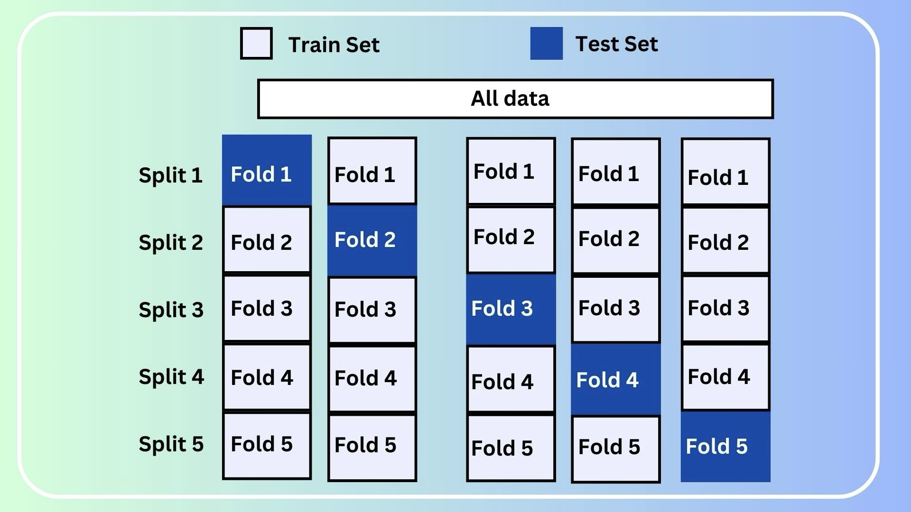

MLDL 모델평가
Chapter 1. 훈련오차 vs 테스트오차
머신러닝에서 가장 자주 등장하는 구분 중 하나가 훈련오차와 테스트오차이다. 그러나 이 구분은 단순한 데이터 분할 기법이 아니라, 통계적 추론과 일반화에 대한 관점 차이를 반영한다. 훈련오차와 테스트오차의 관계를 이해하는 것은 모델 성능을 해석하는 출발점이다.
이 장에서는 학습 성능과 일반화 성능의 개념을 명확히 구분하고, 데이터 분할이 가지는 통계적 의미를 체계적으로 설명한다. 이를 통해 테스트 데이터가 단순히 남겨둔 데이터가 아니라, 일반화 성능을 추론하기 위한 통계적 도구임을 분명히 한다.
- 훈련오차는 적합도를 측정한다.
- 테스트오차는 일반화 성능을 측정한다.
- 두 오차의 차이는 과적합과 분산의 결과이다.
- 데이터 분할은 성능 평가의 편향을 제거하기 위한 통계적 장치이다.
- 훈련–검증–테스트 구분은 통계적 정당성을 확보하기 위한 필수 구조이다.
1. 학습 성능과 일반화 성능
훈련오차란 무엇인가
훈련오차는 학습에 사용된 데이터에서의 평균 손실을 의미한다.
\[{\widehat{R}}_{\text{train}}(f) = \frac{1}{n_{\text{train}}}\sum_{i \in \text{train}}L(y_{i},f(x_{i}))\]
훈련오차는 모델이 이미 관측한 데이터에 얼마나 잘 맞는지를 나타내며, 모델 복잡도가 증가할수록 단조 감소하는 경향을 가진다. 최적화 관점에서 보면, 훈련오차는 학습 과정에서 직접 최소화되는 가장 직접적인 목표이다. 이 의미에서 훈련오차는 적합도의 지표이다.
테스트오차란 무엇인가
테스트오차는 학습에 사용되지 않은 데이터에서의 평균 손실이다.
\[{\widehat{R}}_{\text{test}}(f) = \frac{1}{n_{\text{test}}}\sum_{i \in \text{test}}L(y_{i},f(x_{i}))\]
테스트오차는 새로운 데이터에 대한 예측 성능을 측정하며, 모형의 일반화 능력을 평가한다. 통계적으로는 모집단에서의 기대 위험을 표본을 통해 근사한 값으로 해석할 수 있다. 즉, 테스트오차는 모형의 외삽 능력을 평가하는 지표이다.
왜 두 오차는 다를 수밖에 없는가
훈련오차와 테스트오차의 차이는 우연이 아니라 구조적 필연이다. 훈련 데이터는 모델 선택과 파라미터 추정에 사용되며, 테스트 데이터는 모델 학습 과정에서 소비되지 않는다. 동일한 손실함수를 사용하더라도 두 오차는 서로 다른 조건부 분포 하에서 계산된다.
이로 인해 일반적으로 다음 관계가 성립한다.
\[{\widehat{R}}_{\text{train}}(f) \leq {\widehat{R}}_{\text{test}}(f)\]
Bias–Variance 관점에서의 해석
모델 복잡도가 증가하면 훈련오차는 지속적으로 감소하지만, 테스트오차는 처음에는 감소하다가 일정 지점 이후 증가한다. 이는 편향–분산 상충효과의 전형적인 결과이다. 훈련오차는 편향과 분산을 모두 반영하지만, 테스트오차는 분산 증가에 특히 민감하게 반응한다.

2. 데이터 분할의 통계적 의미
데이터 분할은 무엇을 추정하기 위한 것인가
지도학습의 궁극적인 목표는 모집단에서의 기대 위험을 최소화하는 것이다.
\[R(f) = \mathbb{E}\lbrack L(Y,f(X))\rbrack\]
데이터 분할은 이 값을 표본 기반으로 편향 없이 추정하기 위한 통계적 장치이다.
훈련-테스트 분할의 핵심 원리
데이터를 분할한다는 것은 모델 선택 과정과 성능 평가 과정을 확률적으로 분리하는 것을 의미한다. 훈련 데이터는 모델을 학습하고 조정하는 데 사용되며, 테스트 데이터는 고정된 모델을 평가하는 데 사용된다. 이는 통계학에서 독립 표본을 이용해 가설을 검증하는 사고방식과 동일하다.
”데이터를 아낀다”는 오해
데이터를 나누면 학습 데이터가 줄어들어 손해라는 오해가 흔하다. 그러나 통계적으로는 반대이다. 테스트 데이터가 없으면 성능 평가는 낙관적 편향을 갖게 되며, 훈련오차는 기대 위험의 일관된 추정량이 아니다. 오히려 과도한 자신감과 잘못된 결론을 유발한다.
검증 데이터의 역할
실제 학습에서는 훈련, 검증, 테스트 데이터의 세 집합을 구분한다. 검증 데이터는 모델 선택과 튜닝에 사용되며, 테스트 데이터는 최종 성능 평가를 위해 보존된다. 이 구조는 다중 비교로 인한 성능 평가의 오염을 막기 위한 통계적 완충 장치이다.
| 데이터 | 역할 |
| Training | 파라미터 추정 |
| Validation | 모델·하이퍼파라미터 선택 |
| Test | 최종 성능 평가 |
3. 반복 분할과 확률적 사고
단일 분할의 불안정성
하나의 훈련–테스트 분할 결과는 우연에 크게 의존한다. 어떤 관측치가 어느 집합에 포함되느냐에 따라 테스트오차는 크게 달라질 수 있다. 이는 표본 변동성에 따른 불가피한 현상이다.
교차검증의 통계적 위치
교차검증은 기대 위험 추정의 분산을 줄이고, 데이터 분할의 우연성을 평균화하기 위한 절차이다. 교차검증은 새로운 학습 기법이 아니라, 성능을 추정하기 위한 통계적 방법이다. 이 관점에서 교차검증은 위험 추정의 안정성을 높이기 위한 반복 표본 추출 과정으로 이해할 수 있다.
4. 단일 테스트 성능을 얼마나 믿을 수 있는가
테스트오차는 일반화 성능을 평가하는 핵심 지표이지만, 그 자체로 확정적인 값은 아니다. 테스트오차 역시 표본에 의해 계산된 추정량이며, 분할 방식과 표본 구성에 따라 변동성을 가진다.
따라서 단일 테스트 성능 결과만으로 모델의 우열을 단정하는 것은 위험하다. 특히 테스트 성능이 근소한 차이를 보이는 경우, 이는 통계적으로 의미 있는 차이가 아닐 수 있다. 이 점에서 모델 성능 비교는 값의 크기뿐 아니라, 그 변동성과 추정 불확실성까지 함께 고려해야 한다.
Chapter 2. Cross-validation의 통계적 의미
교차검증(cross-validation, CV)은 흔히 데이터가 적을 때 사용하는 기법이나 모델 성능을 안정적으로 재는 방법으로 소개된다. 그러나 통계적 관점에서 교차검증의 본질은 일반화 오차를 추정하기 위한 확률적 절차에 있다. 교차검증은 단일 표본에서 발생하는 성능 추정의 우연성을 평균화하려는 시도이다.
이 장에서는 교차검증이 왜 필요한지, 표본 변동성이 성능 추정에 어떤 영향을 미치는지, 그리고 CV 결과를 어떻게 해석해야 하며 어디까지 신뢰할 수 없는지를 명확히 정리한다. 이를 통해 교차검증을 만능 도구가 아닌, 통계적 가정과 한계를 지닌 추정 절차로 이해한다.
- 교차검증은 일반화 오차를 추정하기 위한 통계적 절차이다.
- 단일 테스트 분할의 표본 변동성을 평균화하는 것이 목적이다.
- CV는 위험 추정의 분산을 줄이지만, 편향을 제거하지는 않는다.
- CV 결과는 불확실성을 동반하며, 과도한 해석은 위험하다.
- 모델 선택과 성능 평가는 반드시 분리되어야 한다.
1. 교차검증의 필요성
우리가 알고 싶은 것은 무엇인가
지도학습의 궁극적인 관심사는 모집단에서의 기대 위험이다.
\[R(f) = \mathbb{E}\lbrack L(Y,f(X))\rbrack\]
그러나 모집단 분포는 알 수 없으며, 실제로는 하나의 표본만 주어진다. 교차검증은 이 단일 표본로부터 기대 위험을 추정하기 위한 방법이다.
단일 테스트 분할의 한계
단일 훈련–테스트 분할에는 구조적인 한계가 있다. 어떤 관측치가 테스트 집합에 포함되느냐에 따라 테스트오차 추정값은 크게 달라질 수 있다. 즉, 단일 분할에서 계산된 테스트오차는 분산이 큰 추정량이다.
교차검증의 핵심 아이디어
교차검증의 핵심 사고는 다음과 같다. 테스트 표본을 바꿔가며 여러 번 위험을 추정하고, 그 평균을 일반화 성능의 근사로 사용하자는 것이다. 이는 통계적으로 표본 분할에 따른 우연성을 평균화하는 절차이다.
2. 표본 변동성과 성능 추정
K-fold 교차검증의 구조
K-fold 교차검증에서는 데이터를 K개의 부분집합으로 나눈다. 각 단계에서 하나의 fold를 테스트 데이터로 사용하고, 나머지 K-1개를 사용해 모델을 학습한다. 이를 K번 반복하여 성능을 평가한다.
\[{\widehat{R}}_{\text{CV}} = \frac{1}{K}\overset{K}{\sum_{k = 1}}{\widehat{R}}_{- k}(f^{( - k)})\]
여기서 \(f^{( - k)}\)는 k번째 fold를 제외한 데이터로 학습된 모델이다.

교차검증은 무엇을 줄이는가
교차검증의 중요한 역할은 기대 위험 추정의 분산을 줄이는 데 있다. 교차검증은 기대 위험의 불편추정량을 만들어 주지는 않는다. 대신 분산이 큰 위험 추정을 보다 안정화한다. 즉, 교차검증의 주된 효과는 분산 감소이다.
훈련 크기와 편향-분산 절충
K가 커질수록 각 모델은 더 많은 데이터를 사용해 학습되므로 학습 편향은 감소한다. 그러나 동시에 fold 간 추정값의 상관이 커지며, 전체 추정량의 분산이 증가할 수 있다. 이로 인해 교차검증은 편향–분산 절충의 문제로 이해해야 한다.
3. CV 결과 해석의 한계
CV 점수는 ’진짜 성능’이 아니다
교차검증 결과는 모집단에서의 정확한 성능도 아니고, 모델 간 우열에 대한 절대적 증거도 아니다. CV 점수는 표본 기반 위험 추정값일 뿐이다.
모델 비교에서의 함정
실무에서는 다음과 같은 비교가 흔하다. ”모델 A의 CV 정확도는 0.812, 모델 B는 0.808이므로 A가 더 좋다.” 그러나 통계적으로 이는 문제가 있다. CV 점수의 차이는 표본 변동성 범위 내에 있을 수 있으며, 차이에 대한 불확실성이나 표준오차가 고려되지 않는다. 따라서 CV 평균만으로 모델의 우열을 단정할 수 없다.
하이퍼파라미터 튜닝과 CV 오염
교차검증을 사용해 하이퍼파라미터를 선택하면, 해당 CV 데이터는 이미 모델 선택 과정에 사용된 것이다. 이 상태에서 동일한 CV 결과로 성능을 보고하면 낙관적 편향이 발생한다. 이를 피하기 위해서는 중첩 교차검증(nested cross-validation)이나 독립된 테스트 데이터가 필요하다.
CV는 규칙이 아니라 확률적 절차이다
교차검증은 자동화된 정답 생성기가 아니다. 데이터의 크기, 관측치 간 의존성, 시간적·공간적 구조에 따라 교차검증의 적절성은 달라진다. 특히 시계열, 패널, 공간 데이터에서는 무작위 분할을 전제로 한 교차검증이 부적절할 수 있다.
4. 교차검증과 모델 선택의 위험
교차검증은 성능을 추정하기 위한 도구이지, 모델 선택을 정당화하는 장치는 아니다. 여러 후보 모델을 교차검증 점수로 비교하고 그중 가장 높은 값을 선택하는 과정은 다중 비교 문제를 내포한다. 이 경우 선택된 모델의 성능은 우연에 의해 과대평가될 가능성이 크다.
이러한 위험을 줄이기 위해서는 모델 선택과 성능 평가를 명확히 분리해야 한다. 교차검증은 모델을 탐색하고 튜닝하는 단계에서 사용하고, 최종 성능 평가는 독립된 테스트 데이터나 중첩 교차검증을 통해 수행하는 것이 통계적으로 바람직하다.
Chapter 3. ROC, AUC, Precision–Recall의 오해
분류 문제에서 ROC, AUC, Precision–Recall(PR)은 널리 사용되는 성능 지표이다. 그러나 이 지표들은 종종 확률모형의 적합도나 모델의 절대적 우열을 말해주는 것처럼 오해된다. 실제로 이 지표들은 확률 예측 그 자체가 아니라, 확률 예측 위에 얹힌 결정 결과를 평가한다.
이 장에서는 분류 성능지표의 통계적 의미를 정리하고, 임계값의 역할을 확률 예측과 분리해 이해하며, 불균형 데이터에서 지표 선택이 왜 중요한지를 설명한다. 이를 통해 지표를 ”정답을 알려주는 숫자”가 아니라, 의사결정을 지원하는 도구로 재해석한다.
- 분류 성능지표는 확률모형이 아니라 결정 결과를 평가한다.
- ROC/AUC는 순위 분리 능력을 요약하며 임계값과 무관하다.
- PR 곡선은 불균형 데이터에서 더 직접적인 정보를 제공한다.
- 임계값은 통계 문제가 아니라 의사결정 문제이다.
- 지표 선택은 모델 선택이 아니라 문제 정의의 일부이다.
1. 분류 성능지표의 통계적 의미
분류 지표는 무엇을 평가하는가
분류 성능지표는 공통적으로 확률 예측 \(\widehat{p}(x)\)위에 적용된 결정 규칙의 결과를 평가한다. 즉, 지표는 모델이 산출한 확률의 품질 그 자체가 아니라, 그 확률을 어떻게 사용했는지의 성과를 측정한다.
혼동행렬과 지표의 출발점
이진 분류에서 모든 지표는 혼동행렬에서 출발한다.
| 실제 1 | 실제 0 | |
| 예측 1 | TP | FP |
| 예측 0 | FN | TN |
대표적인 지표는 다음과 같다.
\[\text{TPR (Recall)} = \frac{TP}{TP + FN},\text{FPR} = \frac{FP}{FP + TN},\text{Precision} = \frac{TP}{TP + FP}\]
이 지표들은 확률분포를 평가하지 않으며, 사건 발생의 비율을 측정한다.
2. ROC와 AUC의 올바른 해석
ROC 곡선은 무엇을 그리는가
ROC 곡선은 임계값 \(c\)를 변화시키며 \((\text{FPR}(c),\text{TPR}(c))\)의 궤적을 그린 것이다. x축은 FPR, y축은 TPR이며, ROC는 임계값 전 범위에서의 분류 행태를 요약한다.
AUC의 통계적 의미
AUC는 다음 확률로 해석된다.
\[\text{AUC} = \mathbb{P}(\widehat{s}(X^{+}) > \widehat{s}(X^{-}))\]
즉, 임의로 선택한 양성 표본이 음성 표본보다 더 높은 점수를 받을 확률이다. 중요한 점은 AUC가 특정 임계값을 반영하지 않으며, 확률의 보정(calibration)을 평가하지 않는다는 것이다.
ROC/AUC에 대한 대표적 오해
AUC가 높다고 해서 특정 운영 임계값에서의 분류 성능이 반드시 좋은 것은 아니다. 또한 ROC는 불균형 데이터에 대해 시각적으로 안정적으로 보일 수 있으나, 실제 오류 비용을 반영하지는 않는다. AUC는 순위 분리 능력을 말할 뿐이다.

3. Precision–Recall 곡선의 의미
PR 곡선은 무엇에 민감한가
PR 곡선은 임계값 변화에 따른 Precision과 Recall의 관계를 나타낸다. PR 곡선은 양성 클래스의 비율(prevalence)과 거짓 양성(FP)의 비용에 민감하다.
이로 인해 PR 곡선은 불균형 데이터에서 실질적인 성능을 더 직접적으로 반영한다. 불균형이 심할수록 ROC는 낙관적 착시를 줄 수 있다.
| 구분 | ROC | PR |
| 기준 | TPR vs FPR | Precision vs Recall |
| 음성 클래스 영향 | 큼 | 작음 |
| 불균형 데이터 | 둔감 | 민감 |
| 해석 초점 | 순위 | 양성 예측의 신뢰 |
Average Precision(AP)의 해석
AP는 PR 곡선 아래 면적으로, 전 임계값 구간에서의 평균 정밀도를 요약한다. 이는 양성으로 예측된 사례들이 얼마나 신뢰 가능한지를 나타내는 지표로 해석할 수 있다.
4. 임계값(threshold)의 역할
임계값은 통계적 산출물이 아니다
임계값 c는 모델이 자동으로 정해주지 않는다.
\[\widehat{y} = \mathbf{1}\{\widehat{p}(x) \geq c\}\]
임계값은 오류 비용, 운영 목적, 자원 제약에 의해 외생적으로 결정된다. 즉, 임계값은 통계적 추정량이 아니라 의사결정 변수이다.
”최적 임계값”의 환상
ROC에서 가장 먼 점이나 F1-score를 최대화하는 기준은 모두 암묵적인 비용 가정을 포함한다. 비용 구조가 달라지면 ”최적” 임계값도 달라진다. 따라서 임계값의 최적성은 보편적이지 않다.
5. 불균형 데이터에서의 지표 선택
정확도의 붕괴
불균형 데이터에서 정확도는 다수 클래스 예측의 편의를 가릴 수 있으며, 소수 클래스를 완전히 무시해도 높은 값이 나올 수 있다. 이 경우 정확도는 통계적으로 거의 의미를 잃는다.
지표 선택의 원칙
불균형 상황에서는 문제의 목적에 따라 지표를 선택해야 한다. 소수 클래스의 탐지가 중요하면 Recall이나 PR이, 거짓 양성 비용이 크면 Precision이, 순위 기반 선별이 목적이면 AUC가 적합하다. 지표는 문제 정의에 종속된다.
6. 하나의 지표로 모델을 비교할 수 없는 이유
모델 성능을 하나의 숫자로 요약하려는 시도는 본질적으로 위험하다. 각 지표는 서로 다른 측면의 성능을 측정하며, 암묵적으로 서로 다른 비용 구조와 의사결정 목적을 반영한다. 따라서 지표 간의 우열은 보편적으로 비교될 수 없다.
좋은 모델이란 특정 지표에서 최고 점수를 얻는 모델이 아니라, 주어진 문제의 목적과 비용 구조에 가장 잘 부합하는 모델이다. 이 관점에서 성능지표는 결론이 아니라, 의사결정을 돕는 요약 정보로 이해되어야 한다.